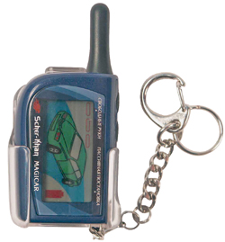

Автомобильные охранные системы SCHER-KHAN MAGICAR по праву считаются одними из пионеров движения автомобильных сигнализаций с обратной связью. Причем производителю удалось привнести в этот сектор удобство и престижность. Так, красочные дисплеи с цветной подложкой и наглядной индикацией состояния автомобиля стали визитной карточкой этих охранных систем. Между тем, производитель постоянно модернизирует систему, и сейчас покупателю уже доступна шестая генерация этих систем.
Ну а сегодня наше внимание остановилось на продукте, который уже достаточно давно присутствует на российском рынке, — SCHER-KHAN MAGICAR 3.
Несмотря на свой достаточно почтенный возраст, система держится молодцом благодаря пережитой недавно модернизации. И этот факт во многом способствовал появлению Scher Khan Magicar 3 у нас в редакции. Ну а коли она появилась, перейдем непосредственно к тому, что нам удалось увидеть.
SCHER-KHAN MAGICAR 3
В яркой коробке с хорошей полиграфией нам удалось увидеть автомобильную сигнализацию SCHER-KHAN MAGICAR 3 (да-да, именно ее, а вы что подумали), но не это самое главное. Под каждый элемент, будь то брелок, антенна или центральный блок, в блистерной подложке отформовано свое место, благодаря чему все выглядит опрятно и аккуратно, тогда как у многих производителей компоненты просто свалены в коробку. В общем, пустячок, а приятно.
Если дизайн упаковки поменялся, то сама сигнализация Scher Khan Magicar 3 осталась как будто бы прежней на первый взгляд. Однако это впечатление обманчиво — специалисты поработали над электронной начинкой, увеличено количество контактов в разъемах, теперь «хищник» вооружен системой кодировки радиоканала MAGIC CODE, в которой шифр меняется каждый раз при нажатии кнопки брелка, команды постановки и снятия с охраны «разнесены» на разные кнопки. Причем алгоритм смены кода используется только в сигнализациях в рамках данного модельного ряда. И это хорошо, ведь защищать есть что: радиоканал во всех сигнализациях играет важнейшую роль, а здесь на нем завязано практически все, благодаря наличию суперфункционального брелка-пейджера. Данная сигнализация Scher Khan Magicar 3 напоминает обыкновенный компьютер, который построен вокруг центрального процессора, так вот здесь этим процессором является брелок-пейджер. Честное слово, такое ощущение сложилось у нас после общения с этой сигнализацией.
Брелок Scher-Khan Magicar 3
Ну, раз так, то и повествование начнем с него. Про дизайн брелка вам расскажут фотографии, мы лишь добавим, что все 4 кнопки расположены на торце корпуса, а вся лицевая часть отдана под жидкокристаллический дисплей. Такое эргономическое решение прослеживается во всей линейке и, нужно сказать, не лишено смысла — пользоваться брелком удобно, а риск случайного нажатия кнопок минимален. Перейдем к функциям. Индикация о состоянии машины передается в трех видах: во-первых, отображается в виде пиктограмм на брелке, во-вторых, дублируется достаточно громкими сигналами, и подтверждается все это великолепие вибрацией. Дальность связи брелка с автомобилем может достигать 1500 метров. Естественно, что при получении сигнала тревоги автоматически включается подсветка дисплея модного синего цвета; впрочем, ничего не мешает включить подсветку вручную и проконтролировать состояние системы.

Кроме того, брелок Scher Khan Magicar 3 позволяет оперативно программировать функции охранной системы, без сложных манипуляций микропереключателем, также с его помощью систему можно перевести в сервисный режим Valet и спокойно отдавать машину на станцию техобслуживания.
Функция «свободные руки»
Самой же интересной особенностью брелка Scher Khan Magicar 3, впрочем, как и всей системы, является функция «свободные руки». Когда эта функция включена, то сигнализация автоматически встает в режим охраны при вашем удалении от автомобиля и снимается с охраны, если вы к нему приближаетесь. Радиус активирования/деактивирования системы составляет от 15 до 35 метров в зависимости от внешних факторов, таких, как радиопомехи, погода, взаимное расположение антенн и так далее.
Название этой функции и определяет ее назначение, будь то поход в магазин или на рынок, когда для того, чтобы снять авто с охраны, приходится вываливать покупки на асфальт, к тому же производитель не рекомендует использовать эту функцию постоянно, так как резко снижается ресурс элементов питания.
Из интересных особенностей сигнализации Scher Khan Magicar 3 отметим датчик вызова владельца автомобиля. Такие датчики применяются многими производителями, но, в отличие от них, в этой системе датчик предназначен больше для общения с внешним миром, к примеру, с водителями, которых вы ненароком «заперли» на стоянке. И вряд ли кто сможет возразить, что такой способ вызова гораздо лучше, чем удар сапогом по кузову вашего авто. К плюсам такой возможности можно отнести следующие факторы: владельца можно вызвать, находясь снаружи авто, присутствует защита от случайного срабатывания плюс к этому регулировка чувствительности — можно выбрать 3 уровня.
Минус один: в инструкции Scher Khan Magicar 3 производитель рекомендует стучать по датчику монетой либо ключами. А если учесть, что ставить датчик надо на лобовое стекло с внутренней стороны, то стоит, наверное, пренебречь рекомендациями и найти предметы несколько помягче фактурой, а то силушка у каждого сугубо индивидуальна.
Ввод кода с брелка Scher-Khan Magicar 3
К сожалению, в аппаратных охранных возможностях такого разгула уникальных особенностей нет, но джентльменский набор присутствует в виде одной аналоговой блокировки, кроме того можно подключить еще две блокировки НЗ и НР типа вместо управления дополнительными или штатными охранными системами, если таковые не планируется использовать. Увеличить число блокировок можно и через дополнительные каналы сигнализации Scher Khan Magicar 3. Фактором повышения безопасности будет и подтверждение снятия с охраны вводом кода на брелке. Даже если кто-то украдет брелок или придумает способ взлома MAGIC CODE, то, не зная этот код, попасть в автомобиль не удастся. Но это средство хорошо против угонщиков, а против «борсеточников» хороши такие функции, как отпирание багажника без снятия сигнализации с охраны и «приоритетное открытие водительской двери» — при первом нажатии открывается водительская дверь, при повторном — все остальные.
Кроме того, все выходы защищены либо внутренними токоограничительными сгораемыми резисторами, самовосстанавливающимися предохранителями, либо варисторами от высоковольтных импульсных помех, а входы защищены RC-цепями и стабилитронами. Благодаря чему сигнализацию Scher Khan Magicar 3 практически невозможно сжечь при ошибочной установке, а также, нередки случаи, когда преступники пытаются обезвредить сигнализацию, подав высокое напряжение на один из входов системы, например, разбив поворотник. В этой системе такой номер не пройдет.
Подводя итог всему вышесказанному, можно сказать, что сигнализация Scher Khan Magicar 3 выделяется из ряда себе подобных. Единственное, что бы мы порекомендовали, так это устанавливать ее совместно с независимым иммобилайзером и механическим блокиратором, тогда охранный комплекс будет удобным, функциональным и очень надежным.